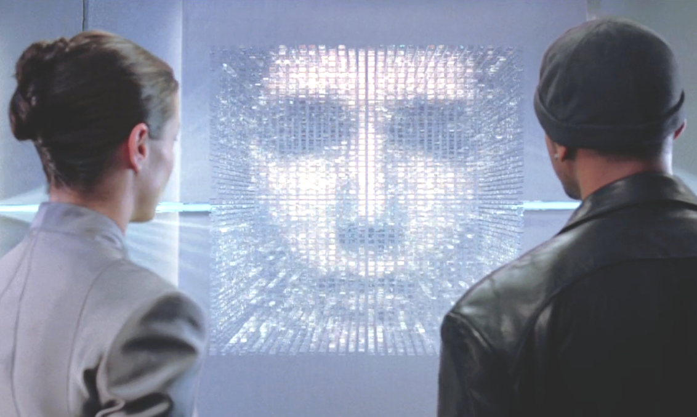
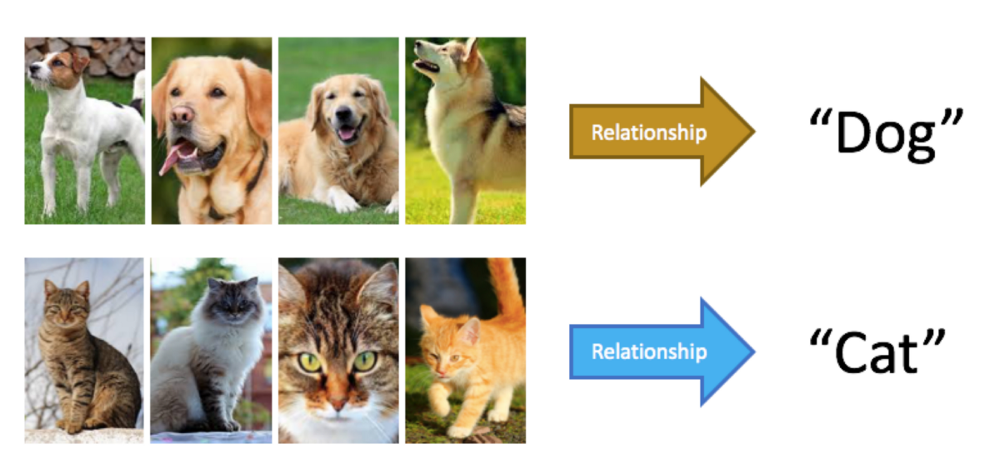
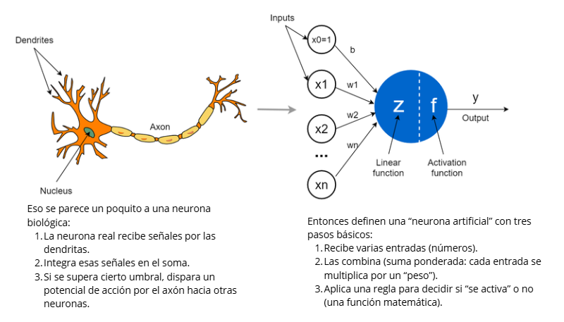
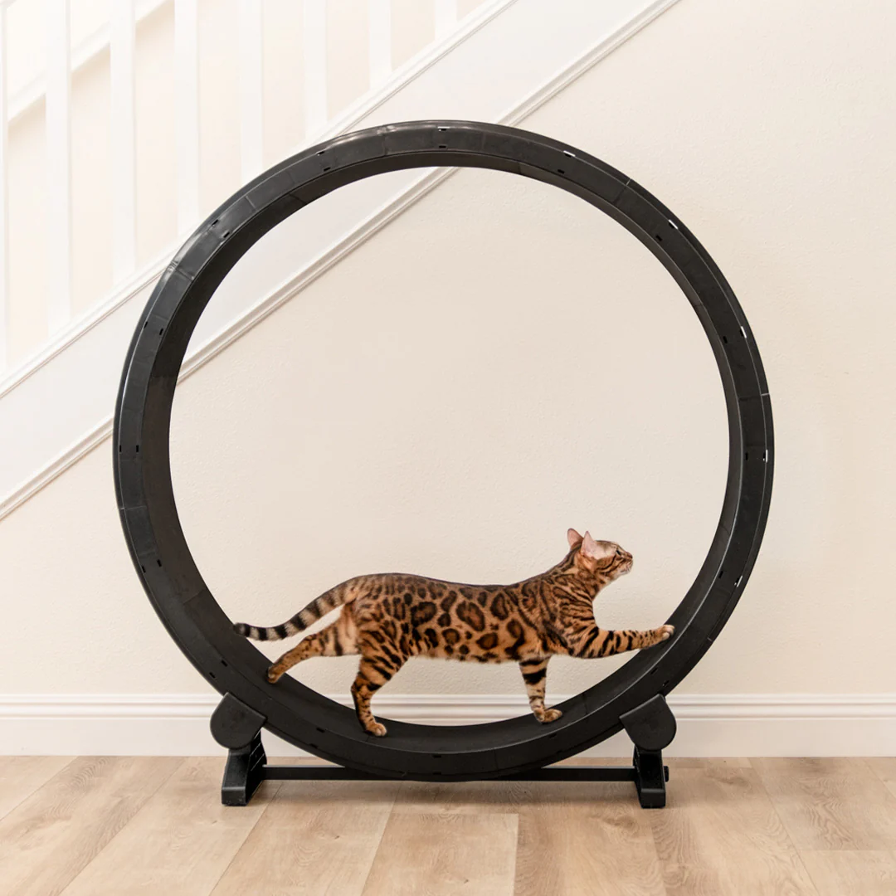
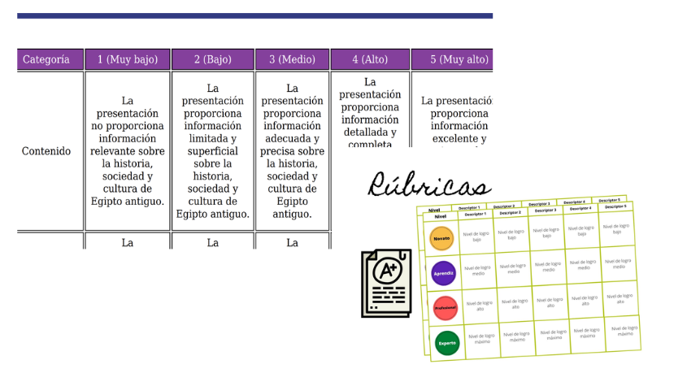
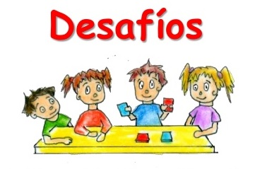
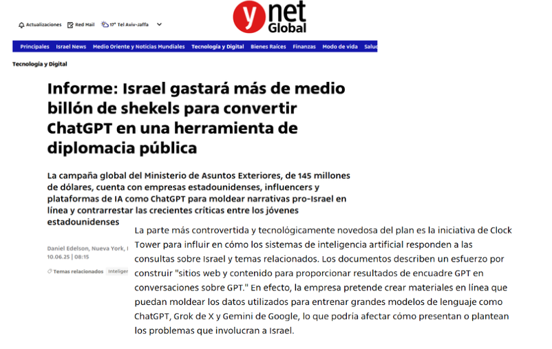
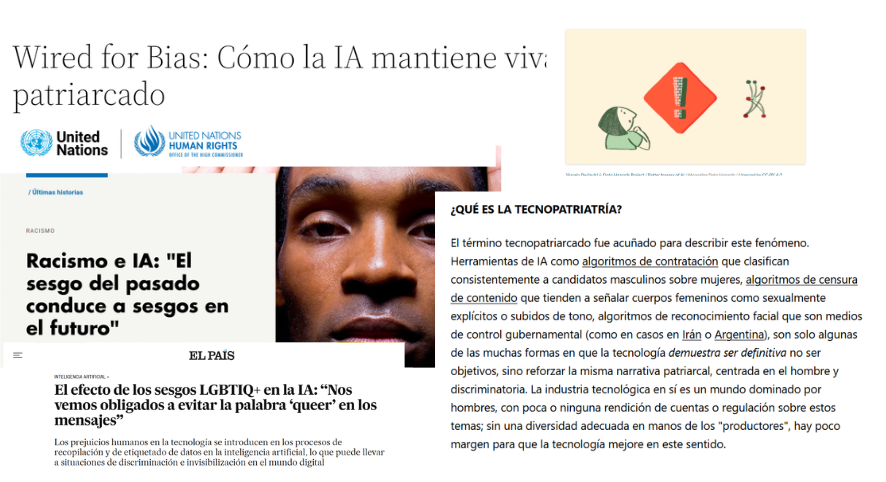

Herramientas prácticas para el trabajo docenteE
IA al servicio pedagógico
Que veremos?
- ¿Qué es la IA y cómo funciona?
- Claves de prompt engineering docente
- Herramientas prácticas para el trabajo docente
- IA e inclusión educativa
- Privacidad, sesgos y brechas de acceso
- Buenas prácticas y pasos pequeños para empezar
- Extras
¿Qué es la IA y cómo funciona?
Machine lerning
Redes neuronales artificiales

Entonces… .
Produce resultados probabilísticos a partir de patrones aprendidos desde datos
Cómo aprende un modelo (entrenamiento):
- Recibe ejemplos (datos).
- Intenta predecir una salida.
- Compara su predicción con el resultado esperado.
- Ajusta parámetros internos para reducir el error.
- Repite este ciclo muchas veces.
IA generativa: crea contenido nuevo (texto/imagen/audio) combinando patrones aprendidos.


Que es un prompt?
Un prompt es una instrucción, pregunta o texto que un usuario escribe para comunicarse con un sistema de inteligencia artificial (IA) y pedirle que realice una tarea, genere contenido (texto, imágenes) o responda una pregunta, siendo la claridad, el contexto y la especificidad clave para obtener resultados precisos y útiles.
- define tarea y propósito
- aporta contexto relevante
- pide un formato utilizable
- impone criterios y restricciones
- reduce ambigüedad y errores
por qué el prompting importa
Si el modelo responde por probabilidad, el prompt funciona como consigna:
- define tarea y propósito
- aporta contexto relevante
- pide un formato utilizable
- impone criterios y restricciones
- reduce ambigüedad y errores
Idea fuerza: Un buen prompt se parece a una buena consigna de aula: clara, con criterios y con límites.
![Repositorio y control de versiones (Git/GitHub en pantalla)]()

Receta de prompting (5 piezas)
- Rol: “Actúa como…”
- Objetivo: “Necesito…”
- Contexto: nivel, OA, tiempo, recursos, diversidad (sin datos identificatorios)
- Formato: tabla, bullets, pauta, rúbrica
- Criterios/restricciones: DUA, lenguaje, evaluación, no inventar, pedir preguntas
Si falta información, el prompt debe pedir preguntas antes de asumir.
Iterativo
Ej de prompt
Actúa como especialista en evaluación auténtica y diseño instruccional para educación escolar chilena.
Tu tarea es CONSTRUIR una rúbrica analítica (4 niveles) para evaluar un producto/ desempeño.
1) CONTEXTO (usa exactamente esto)
- Asignatura: Lenguaje y Comunicación
- Nivel: 2° Medio
- Unidad/Tema: Ensayo argumentativo sobre un problema público local (por ejemplo: convivencia, seguridad vial, medioambiente del barrio)
- Producto evaluado: Ensayo argumentativo (700–900 palabras) + bibliografía breve (mín. 2 fuentes)
- Tiempo de trabajo: 2 clases en aula + 1 semana para entrega
- Propósito formativo: argumentar con tesis clara, evidencia pertinente y organización coherente; mejorar mediante retroalimentación
- Restricciones del contexto: curso heterogéneo; al menos 2 estudiantes con necesidades de apoyo lector/escritor; no usar datos personales reales
2) ENTREGABLES (formato obligatorio)
A) Una rúbrica analítica en TABLA con:
- 6 criterios (filas) y 4 niveles (columnas): “4 Avanzado”, “3 Competente”, “2 En desarrollo”, “1 Inicial”
- Cada descriptor debe ser OBSERVABLE y ESPECÍFICO (evita “bueno/malo” o “adecuado” sin evidencia)
- Incluye un “descriptor ancla” por nivel (frase corta que sintetice el nivel)
- Debe poder aplicarse en 5 minutos por estudiante
B) Ponderaciones:
- Asigna ponderación (%) a cada criterio (total 100%)
- Justifica en 3–4 líneas por qué esas ponderaciones están alineadas al propósito formativo
C) Guía de uso para docentes (máx. 12 líneas):
- Cómo aplicar la rúbrica
- Cómo evitar sesgos al evaluar
- Cómo registrar evidencias (citas textuales / marcas del texto)
D) Retroalimentación lista para usar:
- 4 plantillas de comentarios (una por nivel global) con espacios rellenables:
“Tu fortaleza principal es…”, “Para mejorar…”, “En la próxima versión…”
- Incluye 2 sugerencias específicas de reescritura por nivel
E) Adaptaciones (DUA) sin bajar el estándar:
- 4 apoyos de acceso/participación (lectura y escritura) para el proceso
- 2 alternativas de evidencia del aprendizaje (manteniendo criterios) SOLO si el estudiante lo requiere
- Un mini-checklist de entrega para estudiantes (8 ítems, sí/no)
3) CRITERIOS DE CALIDAD (obligatorios)
- Alinea los criterios a: tesis/posicionamiento, evidencia y fuentes, razonamiento/contraargumento, organización, estilo académico, convenciones/forma.
- Considera el riesgo de IA: incluye un criterio o nota de “integridad académica” (uso transparente de IA y citas) sin convertirlo en castigo automático.
- Lenguaje: español claro, tono profesional, aplicable en Chile.
- Evita referencias a normativa específica si no estás seguro; si necesitas una, pregunta.
4) VERIFICACIÓN
Antes de entregar, revisa que:
- Ningún descriptor repita la misma idea en distintos criterios
- Los niveles sean progresivos (cada nivel agrega o mejora algo)
- No haya ambigüedad (“bien”, “mal”, “adecuado” sin evidencia)
5) PREGUNTAS (solo si son imprescindibles)
Si falta información crítica, haz MÁXIMO 3 preguntas al inicio. Si no, asume lo mínimo razonable y avanza.
Comienza ahora.Herramientas prácticas
Idea central
La IA funciona como asistente de borradores: acelera el proceso, ordena ideas y explicita pasos y puede… crear más tiempo libre.
Regla
La IA propone; el equipo docente revisa, corrige y decide.
Fortaleza clave
Reduce el tiempo de producción y vuelve más eficiente el trabajo docente:
- Administrativo: síntesis, actas, acuerdos/tareas, comunicaciones.
- Pedagógico: planificación, guías, bancos de ítems, rúbricas, feedback modelo.
Qué apoya en la práctica
Diseño pedagógico
secuencias · inicio–desarrollo–cierre · tiempos · preguntas guía
guías/ejercicios · ejemplos · adaptación (más simple / más desafiante)
guiada / intermedia / profundización · apoyos · canales
Trabajo docente cotidiano
resúmenes · acuerdos · comunicaciones · plantillas
ítems · criterios · rúbricas claras · evaluaciones breves
comentarios formativos: logro → mejora → próximo paso
Rubricas y evaluaciones
Resguardos
- Coherencia curricular (OA–actividades–evaluación)
- Pertinencia (carga, dificultad, contexto)
- Inclusión (sin etiquetar ni segregar)
- Privacidad: no datos sensibles (RUT, diagnósticos, salud, nombres completos)
Desafío: borrador listo para usar
Objetivo del desafío: armar una propuesta lista para usar sobre un tema que les sirva para su curso o algo que quieran probar.
Regla del juego: la IA solo asiste borradores.
El desafío es diseñar, en tiempo acotado, una propuesta lista para usar: planificar dos clases, construir una evaluación breve con su rúbrica, crear un material para estudiantes y redactar un correo.
Se recomienda subir como referencia pautas, guías o actividades que ya hayan usado antes, para que la IA genere un borrador similar en estilo y estructura, que luego el equipo docente revisa y ajusta.
Privacidad, sesgos y brechas de acceso
Privacidad, sesgos y brechas de acceso
